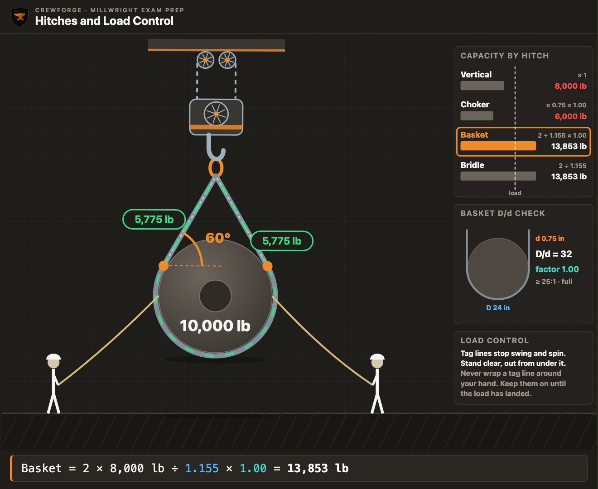
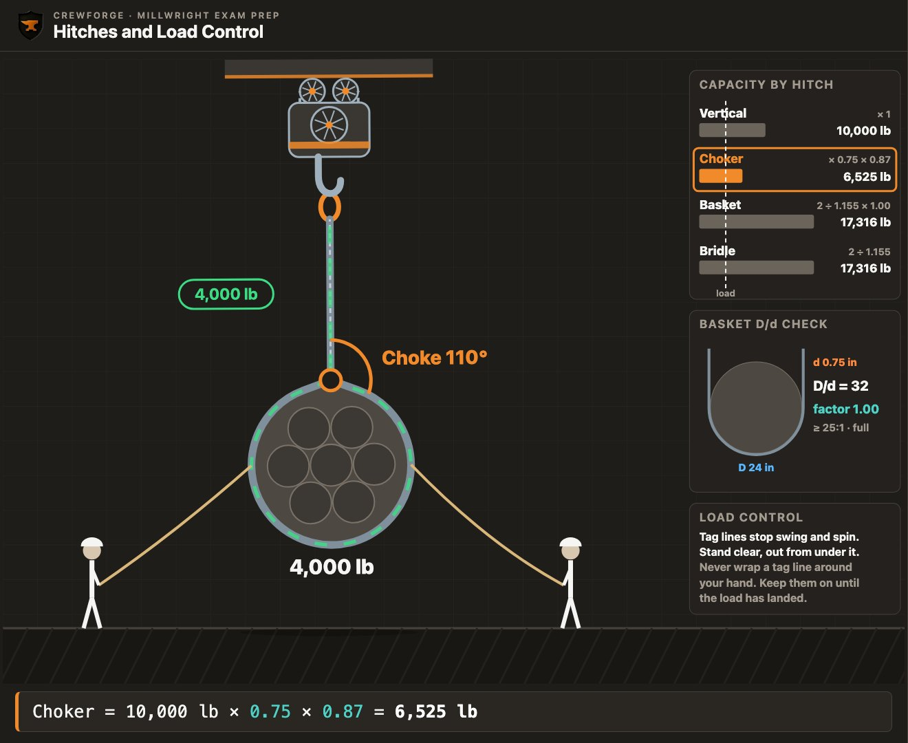
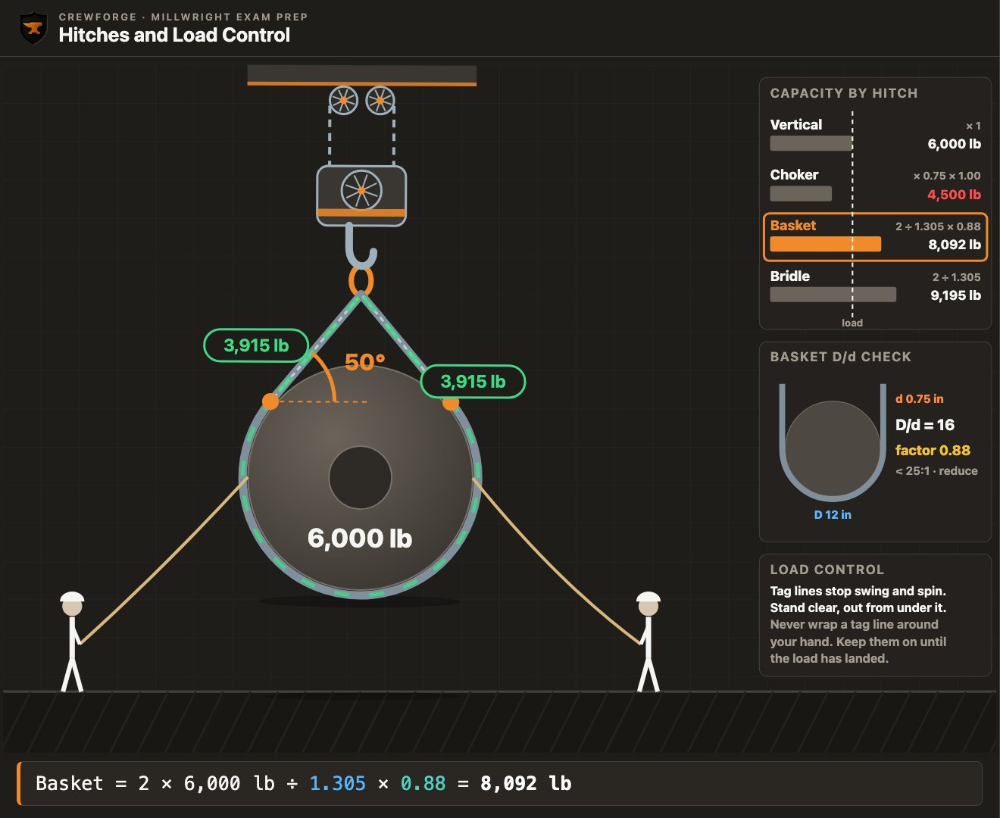
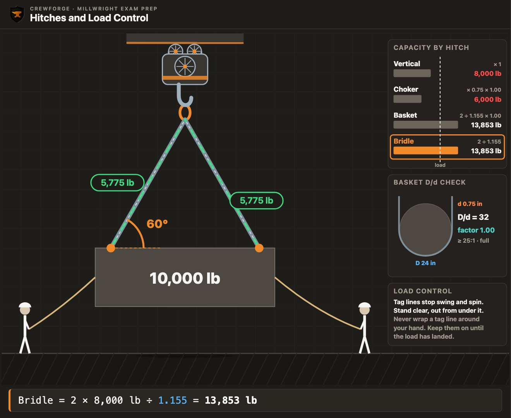

One wire rope sling, rated 8,000 lb. Hitch it four ways and its capacity runs from 6,000 lb to 16,000 lb. Wrap that basket around a small pipe and some of that capacity disappears. Same sling, same tag.
A sling tag gives its rating in a straight vertical pull. On the job, slings are choked around loads, wrapped under them in a basket, or hung in pairs from one hook. Each of these hitches changes what the same sling can lift. This lesson shows you how to work out the capacity of every common hitch, how to pick the right one, which knots riggers use, and how tag lines keep a load under control.
Every load angle factor here is 1 ÷ sin θ rounded to three decimals. Capacities are rounded to the nearest pound or kilogram.
Watch the episode
The full episode · 12 min · AI narration
What you'll learn
- Explain how the hitch changes a sling's capacity from its vertical rating.
- Calculate the capacity of a choker hitch, including the angle-of-choke reduction, in imperial and metric.
- Calculate the capacity of a basket hitch with vertical or angled legs.
- Apply the D/d factor to a wire rope basket hitch.
- Calculate the capacity of a bridle and apply the two-leg rule.
- Choose a hitch for a load from its shape and its lifting points, and protect the sling at sharp edges.
- Name the knots riggers use most and what each one is for, and the rule about knots in slings.
- Apply the rules for tag lines and load control.
Key terms
- Hitch
- The way a sling is rigged to the load and the hook: vertical, choker, basket or bridle.
- Vertical hitch
- One sling leg straight up from the load to the hook. It is rated at the tag's vertical rating.
- Choker hitch
- The sling passes around the load and through its own eye, closing on the load as it lifts.
- Angle of choke
- The angle the sling makes where it passes through its own eye in a choker hitch.
- Double wrap choker
- A choker that goes around the load twice. It grips all the way round and draws a bundle together.
- Basket hitch
- The sling runs under the load with both eyes on the hook.
- Master link
- The large forged link at the top of a bridle. It sits in the hook, holds every leg and carries the whole load.
- Bridle
- Two or more sling legs from one master link to separate lifting points on the load.
- Load angle factor (LAF)
- The multiplier the sling angle puts on leg tension: LAF = 1 ÷ sin θ, θ from horizontal.
- D/d ratio
- The diameter the sling bends around (D) divided by the sling's own diameter (d).
- Softener
- A pad or edge guard placed between a sling and a sharp edge of the load.
- Bowline
- A knot that makes a fixed loop that will not slip, and unties easily after a load.
- Clove hitch
- A quick knot that ties a line to a pipe or post. It can slip if the pull keeps changing.
- Round turn and two half hitches
- A knot that ties a line off to a post or ring and holds under steady load.
- Timber hitch
- A knot that grips a log, pole or pipe so it can be dragged.
- Sheet bend
- A knot that joins two ropes, even ropes of different sizes.
- Tag line
- A rope tied to the load that a worker uses to stop it swinging or turning.
One sling, four hitches
The tag gives one number. The hitch decides how much of it you can use.
A sling's tag gives its working load limit (WLL) in a straight vertical pull. Many tags also list the rating for a choker and a basket. The hitch changes the number because it changes how the sling bends and how many parts of it share the load. A vertical hitch uses the sling the way the tag rates it.
- Vertical: one leg, straight up. The sling carries its full vertical rating.
- Choker: the sling bends hard where it passes through its own eye. That bend costs strength.
- Basket: two parts of the sling share the load, so with vertical legs it can carry twice the vertical rating.
- Bridle: two or more legs to separate lifting points, each leg its own sling.
| Hitch | Capacity (same sling) | What changes it |
|---|---|---|
| Vertical | 100 % of WLL | nothing |
| Choker | 75 % wire rope, 80 % chain and synthetic | a sharp angle of choke |
| Basket, vertical legs | 200 % of WLL | wire rope: the D/d ratio |
| Basket or bridle, angled legs | ÷ load angle factor | the sling angle |
Choker and basket figures are typical maker values. The tag and the maker's chart come first.
The load angle factor, again
When a basket or a bridle has angled legs, each leg pulls partly sideways. To hold the load up it has to pull harder, so the hitch can lift less. Divide by the load angle factor: 1 ÷ sin θ, with θ measured from horizontal.
Basket = 2 × WLL ÷ LAF Bridle = n × WLL ÷ LAF
| Sling angle θ | LAF |
|---|---|
| 90° | 1.000 |
| 75° | 1.035 |
| 70° | 1.064 |
| 65° | 1.103 |
| 60° | 1.155 |
| 55° | 1.221 |
| 50° | 1.305 |
| 45° | 1.414 |
1 ÷ sin θ, rounded to three decimals.
A wire rope sling is rated 6,000 lb vertical. What can it lift as a choker with a normal choke, as a basket with vertical legs around a large drum, and as a basket with its legs at 45°?
Try it first, then show the working
- Choker: 6,000 × 0.75 = 4,500 lb
- Basket, vertical legs: 2 × 6,000 = 12,000 lb
- Basket at 45°: 12,000 ÷ 1.414 = 8,487 lb
Answer: 4,500 lb choker; 12,000 lb vertical basket; 8,487 lb basket at 45°

A synthetic web sling is rated 2,000 kg vertical. What can it lift as a choker, as a basket with vertical legs, and as a basket with its legs at 60°?
Try it first, then show the working
- Choker: 2,000 × 0.80 = 1,600 kg
- Basket, vertical legs: 2 × 2,000 = 4,000 kg
- Basket at 60°: 4,000 ÷ 1.155 = 3,463 kg
Answer: 1,600 kg; 4,000 kg; 3,463 kg
- Which hitch lets one sling lift the most?
Answer
A basket with vertical legs: twice the vertical rating.
- What does a choker cost a wire rope sling?
Answer
A quarter of its rating: a wire rope choker is 75 % of vertical.
The choker hitch
Rigging a choker by the vertical rating is one of the most common sling overloads.
In a choker hitch, the sling wraps the load and passes through its own eye. As the load lifts, the sling closes on it. The sharp bend at the eye is where a choker loses strength. Its rating starts at 75 % of the vertical rating for wire rope, and 80 % for alloy chain and synthetic slings.
The angle of choke is the angle the sling makes where it passes through the eye. Left to seat itself under load, a choke settles at about 135°, and the choker rating stands. If the choke is forced down below 120°, the rating drops again. For wire rope, the table below sets the drop. For synthetic and chain slings, the sling maker's chart does, because their figures differ by maker.
| Angle of choke | % of choker rating |
|---|---|
| 120°–180° | 100 % |
| 90°–119° | 87 % |
| 60°–89° | 74 % |
| 30°–59° | 62 % |
| 0°–29° | 49 % |
Wire rope slings (Certex Table 1; Kennedy Wire Rope & Sling, Capacities and Hitches (PDF p. 1); the 120° edge is Crosby's, catalogue p. 471). Brackets vary slightly between makers.
efficiency: 0.75 wire rope · 0.80 chain, synthetic
A wire rope sling rated 10,000 lb vertical is used as a choker. The choke is pulled down to 110°. What is its capacity?
Try it first, then show the working
- Choker rating: 10,000 × 0.75 = 7,500 lb
- 110° is in the 90°–119° row: 87 %
- 7,500 × 0.87 = 6,525 lb
Answer: 6,525 lb

A wire rope sling rated 3,000 kg vertical is used as a choker with a 45° angle of choke. What is its capacity?
Try it first, then show the working
- Choker rating: 3,000 × 0.75 = 2,250 kg
- 45° is in the 30°–59° row: 62 %
- 2,250 × 0.62 = 1,395 kg
Answer: 1,395 kg
A 3,000 lb load is to be lifted with a single wire rope choker, choke left at about 135°. What vertical rating must the sling have?
Try it first, then show the working
- The choker gives 75 % of the vertical rating
- Vertical rating needed: 3,000 ÷ 0.75 = 4,000 lb
Answer: At least 4,000 lb vertical
A 9,000 lb shaft, CG centred, hangs level from two wire rope chokers that hang straight down, one near each end. What vertical rating must each sling have?
Try it first, then show the working
- Each choker carries half: 9,000 ÷ 2 = 4,500 lb
- Vertical rating needed: 4,500 ÷ 0.75 = 6,000 lb
Answer: At least 6,000 lb vertical, each
- A wire rope choker rated 4,000 lb vertical has its choke at 140°. What is its capacity?
Answer
4,000 × 0.75 = 3,000 lb. 140° is over 120°, so there is no further reduction.
- Which row of the table does a 60° choke fall in?
Answer
The 60°–89° row: 74 %.
The basket hitch
A basket can double a sling's capacity, or lose much of it to the angle and the bend.
In a basket hitch, the sling runs under the load with both eyes on the hook. Two parts of the sling hold the load, so with vertical legs a basket is rated at twice the vertical rating. Once the legs lean in, divide by the load angle factor, exactly as for a bridle. Keep the legs at 30° or more from horizontal: OSHA's sling guidance says not to use horizontal angles under 30° unless the sling maker or a qualified person approves.
The bend: D over d
Wire rope loses strength when it bends around something small. The tighter the bend, the more it loses. Published basket ratings for wire rope assume the sling bends around something at least 25 times its own diameter. That is a D/d ratio of 25 : 1, where D is the load's diameter and d is the rope's.
| D/d | Factor |
|---|---|
| 25 : 1 | 1.00 |
| 20 : 1 | 0.92 |
| 15 : 1 | 0.88 |
| 10 : 1 | 0.86 |
| 8 : 1 | 0.84 |
| 6 : 1 | 0.80 |
| 4 : 1 | 0.75 |
| 2 : 1 | 0.65 |
| 1 : 1 | 0.50 |
Wire rope basket rating against D/d, 25 : 1 = 1.00 (Purdue University rigging training). Between rows, use the next lower ratio.
Between the printed ratios, use the next lower row. A 12 : 1 bend uses the 10 : 1 row. Synthetic slings and alloy chain are not rated by this table, so check their tags.
A ¾ in wire rope sling rated 6,000 lb vertical is used as a basket around a 30 in drum, legs at 50°. What is its capacity?
Try it first, then show the working
- D/d = 30 ÷ 0.75 = 40 : 1, over 25 : 1, so the factor is 1.00
- LAF at 50° = 1 ÷ sin 50° = 1.305
- Basket = 2 × 6,000 ÷ 1.305 × 1.00 = 9,195 lb
Answer: 9,195 lb
The same sling and angle, now around a 12 in pipe. What is its capacity?
Try it first, then show the working
- D/d = 12 ÷ 0.75 = 16 : 1. Use the next lower row, 15 : 1: factor 0.88
- Basket = 2 × 6,000 ÷ 1.305 × 0.88 = 8,092 lb
Answer: 8,092 lb, about 1,103 lb less, from the bend alone

A 16 mm wire rope sling rated 2,500 kg vertical is used as a basket around a 168 mm pipe, legs at 60°. What is its capacity?
Try it first, then show the working
- D/d = 168 ÷ 16 = 10.5 : 1 → the 10 : 1 row, factor 0.86
- Basket = 2 × 2,500 ÷ 1.155 × 0.86 = 3,723 kg
Answer: 3,723 kg
A synthetic web sling rated 4,000 lb vertical is used as a basket with its legs at 70°. What is its capacity?
Try it first, then show the working
- No D/d factor from this table for a synthetic sling
- Basket = 2 × 4,000 ÷ 1.064 = 7,519 lb
Answer: 7,519 lb
- A ½ in rope is wrapped around a 10 in pin. What is D/d, and which row do you use?
Answer
10 ÷ 0.5 = 20 : 1, the 20 : 1 row, factor 0.92.
- A basket's legs are vertical and D/d is 30 : 1. What is it rated at?
Answer
Twice the vertical rating.
Bridles, and picking the hitch
The right hitch depends on the load: its shape, its lifting points, and its edges.
A bridle has two or more legs from one master link down to separate lifting points. The master link is the large forged link at the top that sits in the hook and holds every leg, so it carries the whole load and must be rated for it. The lifting points are the lugs or eyes on the load where each leg attaches. Each leg is a sling with its own rating. Its capacity is the number of legs carrying, times the rating per leg, divided by the load angle factor.
Three or four legs: n = 2 (two-leg rule)
On a rigid load, a three- or four-leg bridle does not share the load evenly. The legs are never exactly equal, so two of them end up with the weight. Plan it as if only two legs carry the load.
A two-leg alloy chain bridle has 4,000 lb legs at 55°. What can it lift?
Try it first, then show the working
- LAF at 55° = 1.221
- 2 × 4,000 ÷ 1.221 = 6,552 lb
Answer: 6,552 lb
A four-leg bridle has 2,500 kg legs at 50°. Using the two-leg rule, what can it lift?
Try it first, then show the working
- Plan for two legs
- 2 × 2,500 ÷ 1.305 = 3,831 kg
Answer: 3,831 kg, not twice that
Picking the hitch
- Vertical: the load has one lifting point and won't turn.
- Choker: bundles and long round loads. A double wrap choker grips best and draws a bundle together. On a long load, use two, spread apart.
- Basket: only when the load can't slide or roll out.
- Bridle: the load has two or more lifting points, such as lugs or eyes.
- A crate has four lifting lugs on top. Which hitch?
Answer
A bridle, planned with the two-leg rule.
- A bundle of loose pipe must stay together. Which hitch?
Answer
Double wrap chokers, two of them, spread apart.
Knots riggers use
Riggers tie off tag lines and hand lines every day, and the exam asks which knot does what.
Fibre rope is used for tag lines, hand lines and light lifts, and riggers tie it with a few trusted knots. Each knot has one job it does well. The five below start with the bowline. Learn what each one is for. A qualified person should show you how to tie them.
| Knot | What it is for | Watch for |
|---|---|---|
| Bowline | A fixed loop that won't slip; unties easily after a load | Leave a long tail |
| Clove hitch | Tying a line quickly to a pipe or post | Can slip if the pull keeps changing |
| Round turn and two half hitches | Tying a line off to a ring, bar or post under load | Take the turn first: it holds the strain |
| Timber hitch | Gripping a log, pole or pipe to drag it | Holds only while it is pulled |
| Sheet bend | Joining two ropes, even of different sizes | Not for joining slings |
Uses from IHSA's rigging chapter (ch. 24) and Animated Knots (animatedknots.com).
A knot holds by friction: the rope pinches itself, the way a hand grips a bar harder the harder the bar is pulled. How each knot pinches decides what it is good for.
- Bowline: the loop is locked by the rope's own turn, so it won't slip or jam under load, and it unties easily once the load is off. On the job: a loop to drop over a hook or a post.
- Clove hitch: two turns held only by friction. A steady pull locks it, but a pull that keeps changing direction rolls the turns, and it slips. On the job: a quick tie to a pipe, backed up if it must hold.
- Round turn and two half hitches: the round turn takes the strain on the post while you tie the hitches, so you can tie off a line that is already pulling. On the job: making off a hand line to a rail.
- Timber hitch: the pull pinches the wraps against the pole, and when the pull stops it falls apart. On the job: dragging a pole or a length of pipe; IHSA adds half hitches to hoist a scaffold plank.
- Sheet bend: one rope wraps around a bend in the other, so it grips even when the ropes are different sizes. On the job: joining a short hand line to a longer one.
- Which knot joins two ropes of different sizes?
Answer
The sheet bend.
- Why is a clove hitch a poor choice where the pull keeps changing?
Answer
It can slip.
Load control and tag lines
A load that swings or turns can pin a worker against a column, or catch a leg on the way past.
A tag line is a rope tied to the load. A worker holds it from a safe distance to stop the load swinging or turning as it moves. Use as many as you need to control the load: on a long load, that is usually one on each end.

- Attach the tag lines before the lift.
- Stand clear of the load, and never go under it, even for a dropped line.
- Never wrap a tag line around your hand, wrist or body.
- Keep the tag lines on until the load has landed and is supported.
If the load moves suddenly, don't fight it: never pull harder or move closer to hold it. Let go of the tag line. A line wrapped around a hand can pull a worker in, or off a ledge. These rules come from the lifting gear makers' tag line guides (Hercules SLR; LGH).
- When can the tag lines come off?
Answer
Once the load has landed.
- What do you do if a load swings hard and the tag line pulls?
Answer
Let go of the line. Never wrap it around your hand.
Putting it together: rig the right hitch
On the job these steps come in one order, and each one needs the one before it.
Here is the order a millwright works through to choose and check a hitch. Your site's lift plan and procedures come first; this is the thinking behind them.
- Know the load: its weight, its centre of gravity and its shape.
- Choose the hitch that suits its lifting points and shape.
- Work out the hitch capacity: choker factors, load angle factor and D/d.
- Check that the capacity is at least the load each sling carries.
- Protect the sling at every sharp edge.
- Attach the tag lines before the lift.
- Lift a few inches, check the hitch has seated, then carry on.
A 9,000 lb roll, 30 in across, must be lifted level. You have two ¾ in wire rope slings rated 6,000 lb vertical. Each sling will take half the load, one near each end. Compare two chokers with natural chokes against two baskets with legs at 60°.
Try it first, then show the working
- Each sling carries 9,000 ÷ 2 = 4,500 lb
- Choker: 6,000 × 0.75 = 4,500 lb: exactly the load, with no margin
- Basket: D/d = 30 ÷ 0.75 = 40 : 1, factor 1.00
- Basket at 60°: 2 × 6,000 ÷ 1.155 = 10,390 lb, 43 % used
Answer: Baskets, 10,390 lb each, if the roll is kept from rolling out (cradled or chocked). Chokers would be at 100 % of their rating.
Key formulas
| Vertical | capacity = WLL |
| Choker | WLL × 0.75 (wire rope) × angle-of-choke %; chain and synthetic 0.80, maker's chart below 120° |
| Load angle factor | LAF = 1 ÷ sin θ (θ from horizontal) |
| Basket | 2 × WLL ÷ LAF × D/d factor (wire rope) |
| D/d | D ÷ d; 25 : 1 or more = 1.00; between rows, the next lower row |
| Bridle | n × WLL ÷ LAF; three or four legs: n = 2 |
| Sling rating needed | load carried ÷ hitch factor |
| Tag lines | on before the lift, off after it lands; never wrapped; never under the load |
Where people lose marks
- Using the vertical rating for a choker. A choker is 75 % (wire rope) or 80 % (chain, synthetic) of vertical.
- Missing the second reduction for a sharp choke. Below 120°, multiply by the angle-of-choke percentage as well.
- Doubling the rating for an angled basket. Twice the rating applies only with vertical legs. Divide by the LAF.
- Forgetting D/d on a wire rope basket. Below 25 : 1, multiply by the D/d factor. Use the next lower row.
- Multiplying by the load angle factor instead of dividing. Capacity goes down as the angle gets lower. Divide.
- Dividing by four on a four-leg bridle. Plan for two legs.
- Knotting a sling to shorten it. Never. Use the right length of sling.
- Taking the tag lines off too early. Keep them on until the load has landed.
Simulator challenge
Open the simulator: an 8,000 lb wire rope sling in a basket around a large drum, lifting 10,000 lb. Find the lowest leg angle that still lifts it, then see what a smaller pipe does to the same basket.
Practice quiz
8 exam-style questions. Pick an answer to see the worked solution and the simulator set up exactly as the question describes.
Practice problems
Show your working on paper, then check it.
A wire rope sling rated 5,000 lb vertical is used as a choker with a 100° choke. What is its capacity?
Show the working
- Choker: 5,000 × 0.75 = 3,750 lb
- 100° → 87 %
- 3,750 × 0.87 = 3,263 lb
Answer: 3,263 lb
A wire rope sling rated 4,000 kg vertical is used as a choker with a 70° choke. What is its capacity?
Show the working
- Choker: 4,000 × 0.75 = 3,000 kg
- 70° → 74 %
- 3,000 × 0.74 = 2,220 kg
Answer: 2,220 kg
A ½ in wire rope sling rated 7,000 lb vertical is used as a basket with vertical legs around an 8 in pipe. What is its capacity?
Show the working
- D/d = 8 ÷ 0.5 = 16 : 1 → the 15 : 1 row, 0.88
- 2 × 7,000 × 0.88 = 12,320 lb
Answer: 12,320 lb
A synthetic sling rated 3,000 kg vertical is used as a basket with its legs at 55°. What is its capacity?
Show the working
- LAF at 55° = 1.221
- 2 × 3,000 ÷ 1.221 = 4,914 kg
Answer: 4,914 kg
A three-leg bridle has 4,000 lb legs at 50°. Using the two-leg rule, what can it lift?
Show the working
- 2 × 4,000 ÷ 1.305 = 6,130 lb
Answer: 6,130 lb
A 2,400 lb load hangs from one synthetic choker with a natural choke. What vertical rating must the sling have?
Show the working
- Synthetic choker: 80 % of vertical
- 2,400 ÷ 0.80 = 3,000 lb
Answer: At least 3,000 lb vertical
Which knot would you use to drag a length of pipe along the floor?
Show the working
- A timber hitch grips a log, pole or pipe so it can be dragged
Answer: A timber hitch
A load is still being lowered the last few inches, and the crew wants to take the tag lines off now. Is that right?
Show the working
- Tag lines stay on until the load has landed
Answer: No. Keep them on until it has landed.
Printable textbook chapter
MW-006 · Hitches and Load Control
This whole lesson as a printable chapter, formatted to be light on toner: every explanation, diagram and worked example, the key formulas, common mistakes, practice questions with full answers at the back, and sources. Every lesson in the program comes with one, and each level's chapters build into a full CrewForge textbook.
These are 4 lessons. The full Level 1 has 40.
Every Level 1 lesson comes like these, plus scored simulator challenges, unit tests, a timed level exam, progress tracking and a certificate of completion. Early access members also watch new episodes before they're on YouTube, with no ads.
Canadian dollars, before tax.
Sources
- Red Seal Occupational Standard (RSOS), Industrial Mechanic (Millwright), Task B-10 Rigs, hoists/lifts and moves load (red-seal.ca/eng/trades/industrialmech/mwa-b.shtml)
- The Crosby Group catalogue (2019), p. 471: a wire rope choker is 75 % and a chain choker 80 % of a single leg when the choke is 120° or more; a basket has twice the capacity of a single leg only if D/d is 25 : 1 and the legs are vertical; Crosby catalogue 2023, p. 416: synthetic choker 80 % (thecrosbygroup.com)
- CCOHS, OSH Answers, Materials Handling – Rigging or Sling Hitches: choker, basket and bridle hitches; tag lines (ccohs.ca/oshanswers/safety_haz/materials_handling/hitches.html)
- Certex, Table 1, choker hitch rated capacity adjustment, and the normal choke of about 135° (certex.com/?p=2537); Kennedy Wire Rope & Sling, Capacities and Hitches (PDF p. 1) (kwrs.com)
- Purdue University PRIME Lab rigging training, D/d ratio: Wire Rope Sling Strength Efficiencies (physics.purdue.edu/primelab/safety/Crane/Rigging/Rig-100.htm)
- Unirope, Some Things Every User Should Know About Use and Care of Wire Rope Slings, p. 6: basket and choker capacities are based on a minimum D/d of 25 : 1 (unirope.com)
- IHSA (Ontario), Construction Health and Safety Manual, Chapter 24 Rigging: bowline, round turn and two half hitches, timber hitch, sheet bend; use tag lines for control (ihsa.ca/rtf/health_safety_manual/pdfs/equipment/Rigging.pdf)
- Animated Knots, Clove Hitch: a simple hitch to a pole or ring that can slip (animatedknots.com/clove-hitch-knot-half-hitches)
- OSHA, Guidance on Safe Sling Use: no horizontal sling angles under 30° except as the maker or a qualified person recommends (alloy chain page); synthetic web slings: pad sharp edges; do not shorten or lengthen a sling by knotting or twisting; knots in any part of the sling (osha.gov/safe-sling-use/synth-web)
- Animated Knots: bowline, round turn and two half hitches, timber hitch, sheet bend (animatedknots.com)
- Hercules SLR, Tips for Taglines: never wrap the line around a wrist, hand, waist or other body part; do not move beneath a suspended load; remove taglines only when the load is supported (herculeslifting.com/blogs/news/tips-for-taglines-training-tuesday)
- LGH, Guidelines for tag lines: use as many as needed to control the load; never loop the line around your hand, arm or body (rentlgh.com/blog/guidelines-for-tag-lines/)
- Industrial Training International, Toolbox Talk 42, Sometimes 4 = 2: with a 4-leg bridle, assume only 2 legs make the lift (iti.com/hubfs/ToolboxTalks_42_041015.pdf)
- Wire rope sling design factor 5 : 1 (ASME B30.9 by topic, clause not reproduced; Kennedy Wire Rope & Sling, Capacities and Hitches (PDF p. 1))
- Load angle factors computed as 1 ÷ sin θ and rounded to three decimals; every worked example checked against the CrewForge rigging simulator's calc() (Hitches mode)
Exam preparation, not a procedure. Always check the sling tag, the manufacturer's charts and your lift plan.